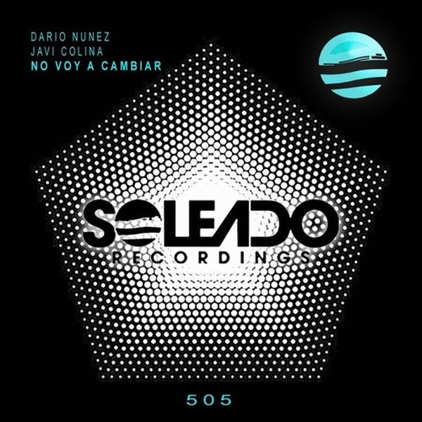

I 24 dischi
 1
Ride itLexa Hill x The Young Punx
1
Ride itLexa Hill x The Young Punx
 2
You And IAlex Nocera, Roy Batty
♪
3
I want youAlex Guesta
2
You And IAlex Nocera, Roy Batty
♪
3
I want youAlex Guesta
 4
Yes!Jack Wins
4
Yes!Jack Wins
 5
Come With MeMatroda
5
Come With MeMatroda
 6
HypeCedric Gervais
6
HypeCedric Gervais
 7
Those Eyes - MOTi RemixARTY feat. Griff Clawson
7
Those Eyes - MOTi RemixARTY feat. Griff Clawson
 8
Don't SpeakZack Martino feat. Jay Mason
8
Don't SpeakZack Martino feat. Jay Mason
 9
HealingFancy Inc & Kryder
9
HealingFancy Inc & Kryder
 10
See You WorkEddie Thoneick
10
See You WorkEddie Thoneick
 11
Tell it to my heart (Tiesto remix)Meduza
11
Tell it to my heart (Tiesto remix)Meduza
 12
DeeperMaurice Lessing
12
DeeperMaurice Lessing
 13
HomelessJennifer Cooke x 3NRGY
13
HomelessJennifer Cooke x 3NRGY
 14
Make u mineMetrush & Triple M
14
Make u mineMetrush & Triple M
 15
Black & BlueGoodboys
15
Black & BlueGoodboys
 16
NightshiftBingo Players
16
NightshiftBingo Players
 17
I WannaJay Hardway & Retrovision
17
I WannaJay Hardway & Retrovision
 18
3, 2, 1Michael Calfan & Nadia Ali
18
3, 2, 1Michael Calfan & Nadia Ali
 19
SHOW MENOT.ME, Max Klimek & Dujak
19
SHOW MENOT.ME, Max Klimek & Dujak
 20
BeatAkiol
20
BeatAkiol
 21
See-Line Woman (Riton Remix)Nina Simone
21
See-Line Woman (Riton Remix)Nina Simone
 22
Back In the HouseAcid Kit & Nico Guerrero
22
Back In the HouseAcid Kit & Nico Guerrero
 23
Tidy Up (Extended Mix)Juliet Sikora, Tini Gessler
23
Tidy Up (Extended Mix)Juliet Sikora, Tini Gessler

24 No Voy a CambiarDario Nuñez & Javi ColinaLa tracklist
- 1 Ride it Lexa Hill x The Young Punx D:Vision
- 2 You And I Alex Nocera, Roy Batty Smash Deep
- 3 I want you Alex Guesta Under Town Records
- 4 Yes! Jack Wins Spinnin' Records
- 5 Come With Me Matroda Terminal Underground
- 6 Hype Cedric Gervais Armada Music
- 7 Those Eyes - MOTi Remix ARTY feat. Griff Clawson Armada Music
- 8 Don't Speak Zack Martino feat. Jay Mason Armada Music
- 9 Healing Fancy Inc & Kryder Spinnin' Records
- 10 See You Work Eddie Thoneick Solotoko
- 11 Tell it to my heart (Tiesto remix) Meduza Universal-Island Records
- 12 Deeper Maurice Lessing Hexagon
- 13 Homeless Jennifer Cooke x 3NRGY Hexagon
- 14 Make u mine Metrush & Triple M Sub Religion Records
- 15 Black & Blue Goodboys Atlantic Records UK
- 16 Nightshift Bingo Players Hysteria Records
- 17 I Wanna Jay Hardway & Retrovision Spinnin' Records
- 18 3, 2, 1 Michael Calfan & Nadia Ali Spinnin' Records
- 19 SHOW ME NOT.ME, Max Klimek & Dujak Groove Bassment
- 20 Beat Akiol TM Records
- 21 See-Line Woman (Riton Remix) Nina Simone UMC (Universal Music Catalogue)
- 22 Back In the House Acid Kit & Nico Guerrero We Love Tech House Records
- 23 Tidy Up (Extended Mix) Juliet Sikora, Tini Gessler Toolroom Records
- 24 No Voy a Cambiar Dario Nuñez & Javi Colina SOLEADO RECORDINGS